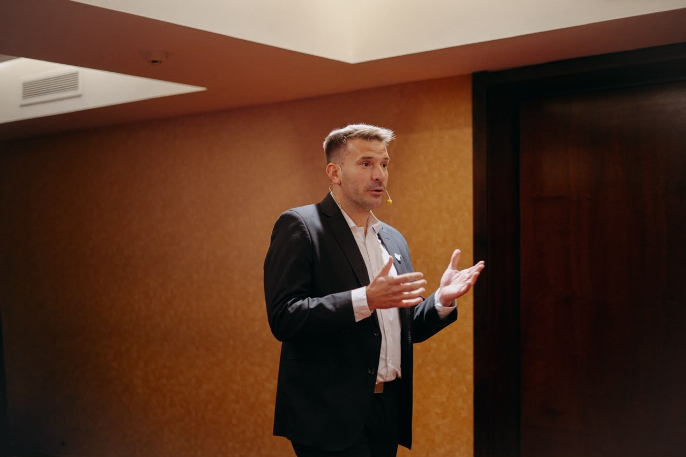
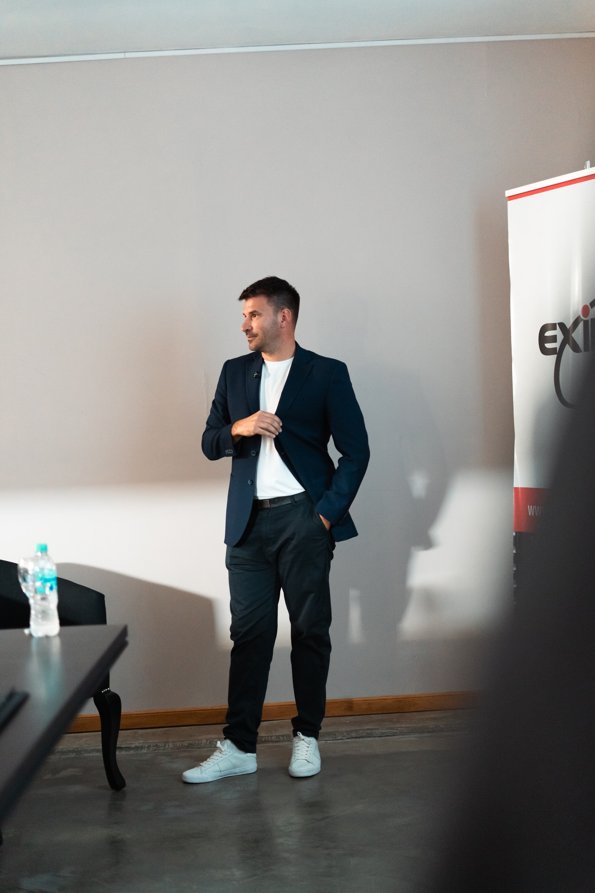
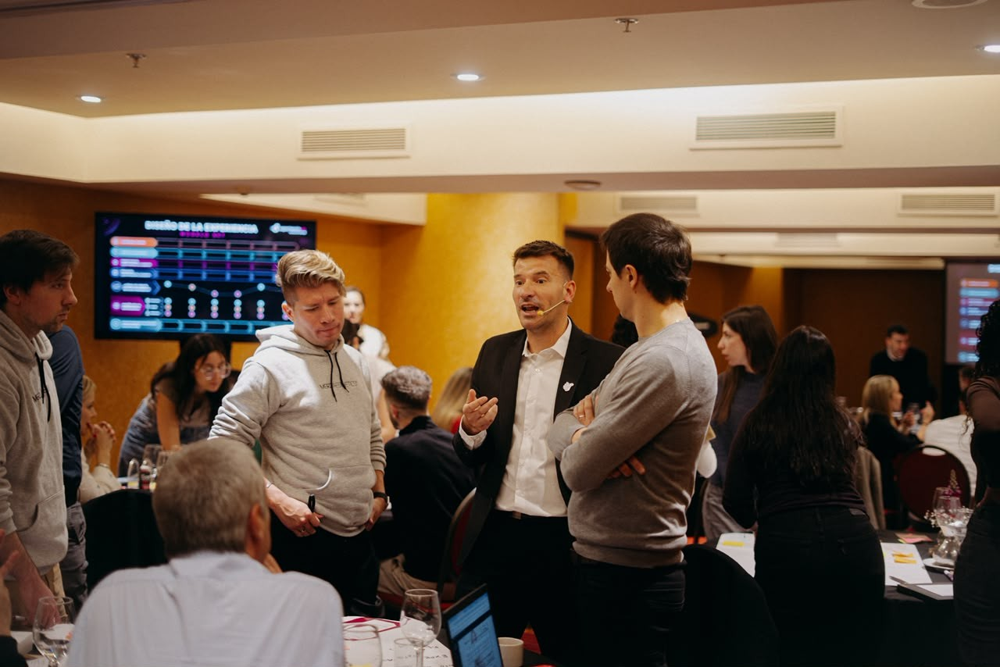
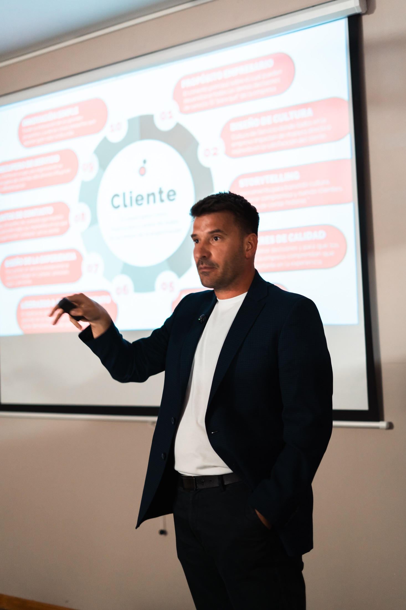
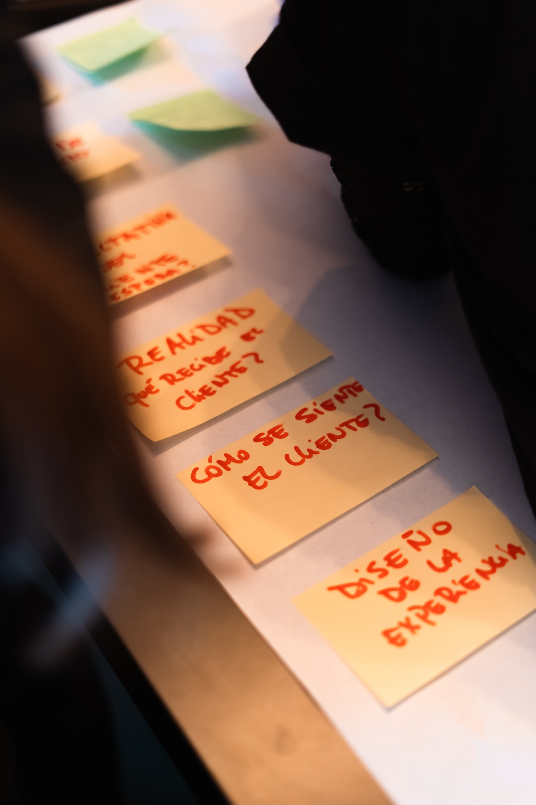
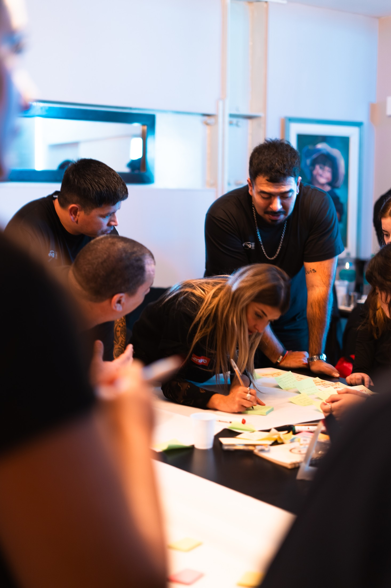

Conectar
Historias y ejemplos que vuelven cercana una idea compleja.

Una buena conferencia puede emocionar durante una hora. El verdadero valor aparece cuando, al día siguiente, las personas saben qué observar, qué conversación iniciar y qué cambiar.

Historias y ejemplos que vuelven cercana una idea compleja.
Modelos claros que crean un lenguaje común en la organización.
Preguntas y herramientas para convertir inspiración en próximos pasos.

Seba combina experiencia corporativa, emprendedora y consultiva. Su trabajo parte de una pregunta incómoda pero útil: ¿cómo hacemos para que aquello que todos consideran importante deje de depender de la voluntad individual?

Cuando la experiencia depende de la buena voluntad de cada persona, el cliente recibe una empresa diferente en cada interacción.
Una conferencia práctica para comprender cómo construir una cultura de servicio que transforme propósito, estándares y valores en comportamientos concretos y consistentes. Porque una cultura sólida reduce la improvisación, alinea decisiones y hace que la experiencia deje de depender de esfuerzos individuales.
La charla recorre cinco pilares para que la audiencia pueda mirar su propia organización con otros ojos.
El para qué deja de ser una frase y se convierte en criterio de decisión.
Lo que la organización tolera, reconoce y repite termina definiendo la experiencia.
Seguridad, cortesía, show, eficiencia e inclusión traducidos a acciones observables.
Cada contacto puede ser diseñado. Cada error puede convertirse en confianza.
La experiencia del cliente comienza en la experiencia cotidiana del equipo.

Muchas organizaciones no tienen un problema de falta de objetivos. Tienen demasiados frentes abiertos, prioridades que compiten entre sí y equipos que conocen la estrategia pero no siempre saben qué deberían hacer diferente esta semana.
Esta conferencia propone una forma simple de convertir estrategia en prioridades, responsabilidades, indicadores y conversaciones de seguimiento que ayuden a decidir y ejecutar mejor. El objetivo no es llenar una planilla de OKRs. Es lograr que las personas sepan qué importa, qué hacer y cómo saber si están avanzando.
Intención, objetivo, resultado clave, indicador y tarea.
Pocas metas relevantes en lugar de una lista infinita de deseos.
Conectar estrategia, equipos y responsabilidades sin perder velocidad.
Instalar una cadencia breve de revisión, aprendizaje y corrección.
Usar los objetivos para mejorar decisiones y no para castigar desvíos.

Cada conferencia puede adaptarse al desafío de la organización, al perfil de la audiencia y al resultado que el evento necesita provocar.